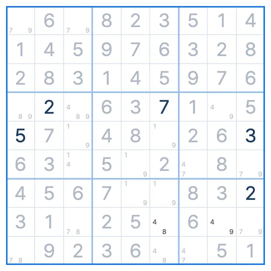

SUDOKU TECHNIQUE · 8단계 유일성
BUG+1
버그 플러스 원 · Bivalue Universal Grave
BUG+1은 빈 칸이 모두 후보 두 개인데 한 칸만 후보가 세 개일 때, 그 칸을 행·열·박스에서 세 번 나오는 숫자로 채우는 스도쿠 기법이에요.
- 필요한 상태
- 빈 칸 모두 후보 2개, 한 칸만 3개
- 보는 곳
- 후보가 세 개인 칸
- 하는 일
- 세 번 나오는 숫자로 채우기
BUG+1 모양
판의 빈 칸이 모두 후보 두 개이고, 5행 5열만 2·6·7 세 개인 상태예요. 그림은 5행만 보여줘요. 5행에서 2와 6은 두 번씩 나오지만, 7은 세 번(2열, 5열, 8열) 나와요.
왜 이 숫자인가요?
5행 5열이 7이 아니라 2나 6이라고 해 볼게요. 그러면 판의 모든 빈 칸에 후보가 두 개씩 남고, 줄과 박스마다 각 숫자가 두 번씩 나오는 상태가 돼요.
이런 상태의 판은 답이 하나로 정해지지 않아요(두 후보를 번갈아 바꿔도 규칙이 맞는 답이 생겨요). 제대로 만든 스도쿠는 답이 하나뿐이니, 그렇게 될 수는 없어요. 그래서 5행 5열은 7이에요. 줄이나 박스에서 세 번 나오는 바로 그 숫자예요.
BUG+1 찾는 순서
- 판의 빈 칸 후보를 모두 적었을 때 후보가 세 개인 칸이 딱 하나이고 나머지는 모두 두 개인지 봐요.
- 그 칸의 행, 열, 박스에서 세 번 나오는 숫자를 찾아요.
- 그 칸을 그 숫자로 채워요.
BUG+1 레슨 받기
스도쿠 리그의 기법 레슨을 체험해보세요.
불러오는 중이에요
자주 헷갈리는 점
BUG가 무슨 뜻이에요?
Bivalue Universal Grave의 줄임말이에요. 모든 칸이 후보 두 개(bivalue)라 답이 갈리는 "무덤" 상태라는 뜻이에요.
후보가 세 개인 칸이 두 개면요?
그건 BUG+1이 아니에요. 한 칸만 세 개일 때 쓸 수 있어요.
답이 하나라는 걸 믿어도 되나요?
스도쿠 리그의 퍼즐은 모두 답이 하나뿐이도록 만들어요. 답이 여러 개인 퍼즐에서는 쓸 수 없어요.
비슷한 기법
스도쿠 리그 앱에서
막히면 힌트가 BUG+1를 보여줘요
풀다가 막혀 힌트를 누르면, 후보가 세 개인 칸과 채울 숫자를 보드 위에 표시해 줘요. 기법 연습에서는 실제 문제 위에서 BUG+1 수업을 들을 수 있어요. 첫 판에서 모양과 이유를 같이 보고, 다음 판에서는 직접 찾아봐요.

EVENT · SUDOKU LEAGUE PREMIUM
1개월 무료
무제한 힌트 · 리플레이 · 테마 팩 6종 · 기법 연습
쿠폰 받으러 가기 ▸수량